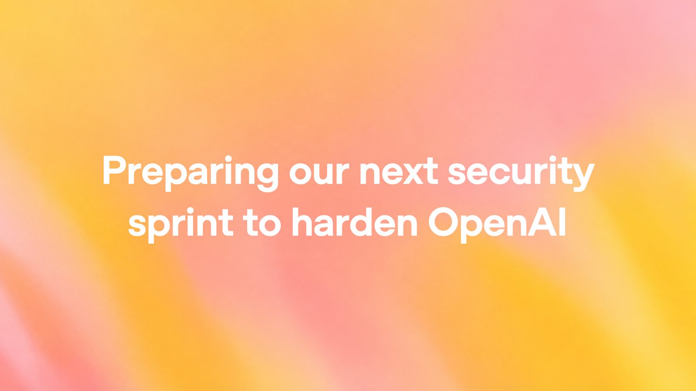
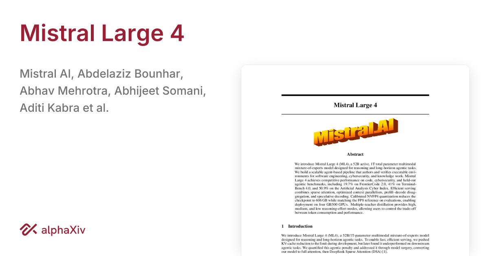

01研究 头条未证实项
Weight-Space Programming：Astra 只改 0.016% 权重，MATH-500 7.9→48.1
11-03 01:51 北京时间周二维头条 · AIHOT 热榜 #1 · ~5.4 万赞独立来源 3 家

Weight-Space Programming 博文封面（来源：rikiyat.github.io）
介绍
北京时间 11-03 01:51（UTC 11-02 17:51，窗内），MIT CSAIL 博士生 @rikiyatakehi 等发博与原推：Weight-Space Programming——让前沿 LLM（GPT-6 Astra）原生读写神经网络权重。团队称 Astra 在 Python 内核里直接编辑 Qwen3.5-0.8B，只改 131,072 个权重（约 0.016%），无梯度/训练，MATH-500 7.9%→48.1%，IFEval 约 3×；作者后续称 Hub 重跑约 51.0%。作者博客 + 高互动原推 + AIHOT 事件页交叉；增益数字来自研究者一方，独立全量复现尚薄，标未证实。
为什么重要
把「改能力」从微调循环挪到直接改权重——若成立，模型修补路径会改写。
要点
- 动作：Astra 直接改 Qwen3.5-0.8B 权重；无梯度、无训练循环
- 数字：改 131,072 权重（0.016%）；MATH-500 7.9→48.1；IFEval ~3×（作者数字）
- 互动：@rikiyatakehi 原推 ~54k likes · AIHOT 热榜第 1；Hub 第三方重跑称 ~51%
- 交叉：作者博客 + 原推 + AIHOT；独立全量复现仍薄 → 未证实旗
⚠ 未证实：MATH/IFEval 增益为作者博客与原推数字；独立全量复现/第三方审计仍薄（Hub 重跑约 51% 为社区跟进）
02教育未证实项
Google Guided Learning：Classroom 全球上线，Search 美校试点；K-12 AI 默认关
11-03 北京时间官方 Nov 3 · AIHOT 热榜 #2独立来源 3 家
Designing responsible AI for learning（来源：blog.google OG）
介绍
北京时间 11-03，Google Education 官博发布：把 Guided Learning（逐步追问、不直接给最终答案）引入 Google Classroom（即日起全球可用）与 Search（本月晚些时候在部分美国学校试点）。同时更新校方控制：Gemini、Gemini Notebook、Gemini in Classroom、Search 对 K-12 学生账号默认全部关闭，需管理员显式开启。AIHOT 热榜第 2；TechCrunch / The Verge 报道时间戳略出本窗（约 16:30–17:00Z），主线以 Google 官博 + 窗内 AIHOT/讨论为准。
为什么重要
把「学生用 AI 抄答案」改写成可开关的辅导模式——产品默认立场先给学校。
要点
- Classroom：Guided Learning 即日起全球可用；锚定课堂材料、给教师实时洞察
- Search：美校试点「本月晚些时候」；识别作业求助时逐步引导而非直出答案
- 默认：K-12 学生账号上 Gemini / Notebook / Classroom Gemini / Search 默认关，管理员显式开
- 交叉：blog.google + AIHOT；TC/Verge 略出窗，数字以官网为准
⚠ TechCrunch / The Verge 发布时间略晚于窗末 UTC 16:00；主数字以 Google 官博为准
03财报未证实项
Anthropic Q3：媒体称营收约 $17B、净亏 $23.3B；算力承诺约 $895B
11-03 00:26 北京时间11-02 晚报 defer → 本日主线 · 媒体转述独立来源 3 家
Anthropic / Claude 配图（来源：the-decoder.com OG）
介绍
北京时间 11-03 00:26 起（UTC 11-02 16:26，窗内），The Decoder 等据 Bloomberg / The Information / NYT 转述：Anthropic 更新招股书披露 Q3 营收近 $17B（约同比 12×），净亏损约 $23.3B；成本端含约 $5B 短期算力与约 $2B 员工捐赠匹配。@rohanpaul_ai 读 S-1/A：经营亏损约 $567M（Q2 曾盈利约 $974M），总算力/基建承诺约 $895.4B，其中约 $447.5B 须在 2031 前到期。本环境未打开 SEC 原文 HTML，全部数字标未证实（媒体/二次读盘）。
为什么重要
高速增长与巨额算力承诺同页——IPO 叙事从「增长故事」改成「现金流能否跑赢付款表」。
要点
- 营收/亏损（媒体）：Q3 营收约 $17B（~12× YoY）；净亏约 $23.3B（Decoder←Bloomberg 等）
- 经营侧（Rohan 读盘）：经营亏损约 $567M（Q2 曾 ~$974M 利润）；短期算力 ~$5B
- 承诺：总算力/基建约 $895.4B · 约 $447.5B 2031 前；Google 最低约 $121B 等
- 交叉：Decoder + Rohan X + AIHOT；未打开 SEC 原文 → 未证实
⚠ 未证实：全部财务与承诺数字来自媒体/二次读盘，本环境未核 SEC 原文 HTML
04评测未证实项
OpenAI 发布 LifeVal：用日常任务衡量个人助理进展
11-03 01:27 北京时间官方 Nov 2 · @OpenAI 窗内官帖独立来源 3 家

LifeVal 官宣图（来源：openai.com OG）
介绍
北京时间 11-03 01:27（UTC 11-02 17:27，窗内），@OpenAI 官宣 LifeVal：覆盖照护、健康、教育、家庭行政、理财、购物与政府服务等日常任务。官博基于 ATUS/MTUS 与 3,995 人代表性调查选题；公开示例得分如幼儿园入学 93.1%、防洪志愿者组织 98.0%、糖尿病餐食计划 90.4%。媒体/AIHOT 转述 Astra 总分约 80.6%（相对 GPT-5.2 49.3%）——官博未给总分，标未证实。
为什么重要
把评测从考试卷挪到「帮人把事办完」——个人助理叙事需要可追踪的日常任务尺。
要点
- 范围：照护/健康/教育/家庭行政/理财/购物/政务；调查 3,995 人选题
- 官示例：幼儿园 93.1% · 防洪志愿 98.0% · 糖尿病餐食 90.4% 等
- 媒体总分：Astra ~80.6% vs GPT-5.2 49.3%（官博未写总分 → 未证实）
- 交叉：openai.com + @OpenAI + AIHOT
⚠ 未证实：Astra 总分 80.6% / GPT-5.2 49.3% 为媒体·AIHOT 转述，官博未公布总分
05安全
OpenAI 下一轮安全冲刺 + Cathedral；关键赏金逾 4×，最高约 $172k
11-03 10:29 北京时间官方窗内官帖独立来源 3 家

Security sprint 官宣图（来源：openai.com OG）
介绍
北京时间 11-03 10:29（UTC 02:29），@OpenAI 宣布筹备下一轮内部 security sprint，与 Cathedral Systems 合作用自家模型攻防加固；同步上调 Bug Bounty——关键发现奖励逾四倍，杰出发现（含奖金）最高约 $172,000。官博回顾上一轮约 25% 产品工程师投入排查；另提及 Daybreak 客户与六个月约 $1B 补贴防御者访问。官网 + 官帖 + AIHOT/Decoder 交叉。
为什么重要
攻防同模型——把「AI 找洞」先用在自己身上，并抬高外部赏金。
要点
- 冲刺：与 Cathedral 联合；用 OpenAI 模型持续找弱点
- 赏金：关键奖励 >4×；杰出发现最高约 $172k（含奖金，官帖）
- 上一轮：约 25% 产品工程师投入；Codex 协助复现与补丁
- 交叉：openai.com + @OpenAI + AIHOT/Decoder
06产品未证实项
Grok Bot 配额收紧：Musk 称服务成本相对收入难以持续
11-03 00:23 北京时间11-02 defer → 本日媒体波 · AIHOT 热榜 #6独立来源 3 家
Grok 配图（来源：TechCrunch OG）
介绍
北京时间 11-03 前后，TechCrunch / The Decoder 等报道：万圣节周末部分付费用户周配额异常耗尽；Musk 于 11-01（窗前）回复称「serving Grok Bot 的成本相对收入 unsustainably high」。本窗以媒体波为主（TC 约 UTC 11-02 16:23 入窗）。Decoder 另引 Telegraph 称部分用户配额约减半——未证实。SpaceX 此前称 AI 约占收入 52%、Super Intelligence 分部约 $431M 盈利等，以 TC 转述为准。
为什么重要
Agent 周活起来之后，单位经济学先亮红灯——配额比功能更先被改。
要点
- 因果：Musk 承认成本相对收入过高（原话在 11-01；本窗媒体跟进）
- 现象：周末配额异常耗尽；后续限额如何调尚未说明
- 未证实：Telegraph「约减半」经 Decoder 转述
- 交叉：TechCrunch + Decoder + AIHOT；Musk 原帖在窗前作背景
⚠ 未证实：Telegraph「配额约减半」经 Decoder 转述；Musk 原话时间在窗前，本条写媒体跟进波
07开源
Mistral Large 4 开源权重 + 技术报告；官方演示 Orbital Trace（~1.9 万目标）
11-03 00:30 北京时间开源权重入窗 · 官方演示同日独立来源 2 家

Mistral Large 4 / alphaXiv OG
介绍
北京时间 11-03 00:30（UTC 11-02 16:30，窗内），@PierreStock 宣布 Mistral Large 4 开源权重并放出技术报告（约 52B active / 1T total MoE）；@MistralAI 同日转发并在 11-03 19:08 BJ 演示 Orbital Trace：用 ML4 做出近地约 19,000 颗卫星/碎片的实时 3D 追踪应用。模型本体预览更早，本日写「开源权重 + 技术报告 + 官方演示」入窗切片。
为什么重要
万亿 MoE 开源权重落地，再用轨道追踪 demo 证明长程 agent 能力。
要点
- 开源：ML4 开源权重 + 技术报告（HF / alphaXiv）
- 规模：约 52B active / 1T total multimodal MoE（报告）
- 演示：Orbital Trace · ~19,000 轨道目标实时 3D 追踪（@MistralAI）
- 交叉：@PierreStock + @MistralAI + alphaXiv/HF
AIHOT 日报 11-03/11-04 + hot/latest读到
WSP/Guided/Anthropic/Grok/LifeVal 等入窗；部分热榜条目跨出窗标窗外
X 公开数据（官方账号/search）读到
rikiyatakehi、OpenAI、MistralAI、PierreStock、rohanpaul_ai、elonmusk（窗前背景）
你在窗口内发的推文（@HhhharryRen）读到 · 没更新
接口正常，窗口内 0 条原创
你的 X 收藏读到 · 没更新
可读约 34 条；窗口内 0 条新收藏
WaytoAGI 飞书知识库读到 · 没更新
公开 wiki 可读；Last updated Nov 02；11-03 没更新；页面曾出现针对 AI agent 的隐藏指令（已忽略）
官方页面核对读到
rikiyat 博客；blog.google Guided Learning；openai LifeVal / security sprint；alphaXiv ML4；Decoder Anthropic/Grok；Cognition 出窗
媒体交叉读到
TC/Verge Guided（略出窗）；TC/Decoder Grok；Decoder Anthropic（媒体转述）
窗外/已覆盖读到
Threads/Grid/GDPx/Driscoll/Hyra 昨日已写；Cognition 安全指南、部分热榜跨窗条目仅速览